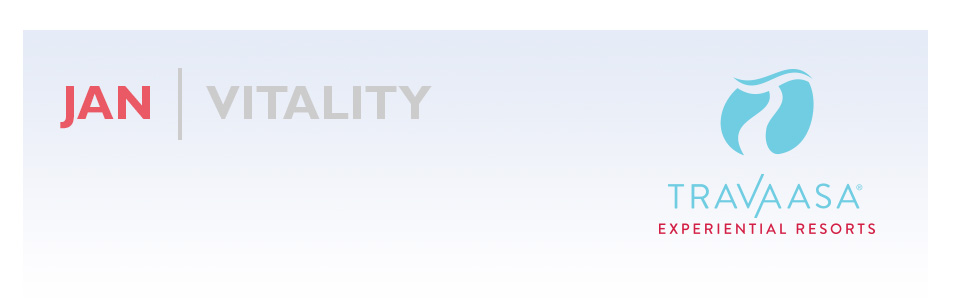
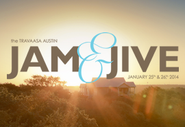

The gym is packed again. It’s time for that awkward dance in the locker room as you try to get undressed without bumping into anyone. I have to admit, I’ve been a more frequent visitor over the past week as well. There is something about the new year that gets us all focused on feeling better—more alive, more aware, more present. Each New Year brings a renewed search for vitality.
January is Vitality Month at Travaasa Experiential Resorts. It’s tough not to feel vital after a day of healthy eating, adventure, workouts, and spa treatments. In Austin, grab a friend and take a ride on our new giant swing. I promise it will get the juices flowing. In Hana—look at that picture, it’s incredible! Hit one of our early morning yoga classes, watch the sunrise, and approach the day with a new outlook.
Vitality is a few clicks away. Come experience it with us.
P.S. – You’re crazy if you don’t register for our Hana State of Mind 25 Days of Giveaways.
THIS MONTH |
|  |
We’re teaming up with foodie magazine Edible Austin to bring you Jam & Jive, a weekend of learning, eating, dancing and exploring January 25-26, 2014. Cooking workshops, a farm-to-table dinner and dance lessons await you, followed by Sunday brunch on the Travaasa Farm. Day passes and overnight packages available now. get tickets |
|
It’s time to start planning your 2014 travel, so go ahead and make your reservations at Travaasa Hana and you’ll automatically be entered to win the trip you just booked. Or, you can also be entered to win your dream trip to Hana by heading on over to our Facebook page—we’re giving away a prize a day every weekday in the month of January with a grand prize of a Trip to Hana. enter to win |
 |
What’s more romantic than proposing in Austin or eloping in Hana? Proposing in Austin then eloping in Hana, of course! Love is always in the air at Travaasa and we now have new offerings to make it easy to pop the question. Propose in the Hill Country amidst rose petals and candles in the Solidago Gardens, or elope in paradise and let us make your vision of an island wedding a dream come true. more |
 |
Your Maui vacation is not just about the destination, but also about the journey getting there. The Road to Hana is one of the most beautiful drives in the world with over 620 curves, 59 bridges suspended over lush rainforest terrain and breathtaking views. The Hana Highway is filled with roadside stops and must-see attractions. If road trips aren’t your style, we also offer flights from Maui to Hana for a bird’s eye view. more |
“The physical beauty and the spiritual peace of this property are amazing.
If you are looking for the "party hearty" crowd, go anywhere.
If you are looking to find yourself, come to Hana.
Many of the staff of this resort grew up on or near the property. They love this place as it should be loved, and they will lead you to love it too.” –YOGIMN, Saint Paul, Minnesota |
ON THE HORIZON
February is Heart Month
February combines two passions: health and love. This month we are dedicated to sharing our love for travel and wellness with you. From vacationing with your significant other, to embracing an active lifestyle throughout the year - both properties are offering heart-healthy and romantic Valentine’s Day programming. We’ll be offering couples yoga, dinner-for-two demonstrations and will even have an officiant at Travaasa Austin for those who are ready to say, “I do!”
March is GO Month
With the temperatures starting to warm, we want to inspire you to get out and go during the month of March at Travaasa. Explore the beautiful Austin Hill Country on our cross country mountain bike trails. Escape into nature on a guided horseback ride. Or enjoy a yoga class with an oceanfront view in Hana. Don’t forget our Food Truck will be at SXSW if you’re in Austin, too!
|
|